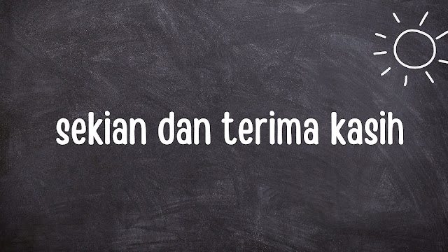

Notasi sigma yang ditulis dengan lambang Σ adalah sebuah tanda yang digunakan untuk menuliskan suatu penjumlahan secara singkat. Lambang notasi sigma merupakan huruf besar Yunani yang berasal dari kata asing “sum” yang artinya jumlah.
Tujuan dari penggunaan notasi ini adalah untuk meringkas penjumlahan yang panjang dan rumit yang terdiri dari suku-suku atau deret tertentu. Dalam kata lain, Notasi sigma memiliki fungsi untuk mempermudah dalam menulis penghitungan suatu penjumlahan yang panjang.
Nah cara pengerjaan notasi sigma ini terbagi menjadi dua:
Cara pengerjaan yang pertama adalah subtitusi langsung
Jadi kalau menggunakan subtitusi langsung ini biasanya di gunakan pada angka angka yang kecil, Nah sesuai dengan namanya "subtitusi" yang artinya penggantian, berarti n dari (3n+2) nya di ganti nih menjadi n=2 sampai n=5. kalau n nya sudah di masukan tinggal di kali dengan angka sebelum n dan di jumlahkan.
Cara yang kedua itu menggunakan rumus
Nah kalau tadi subtitusi langsung itu syaratnya angkanya kecil, kalau menggunakan rumus itu syaratnya angkanya besar jadi yang tidak memungkinkan untuk kita hitungin satu-satu.
